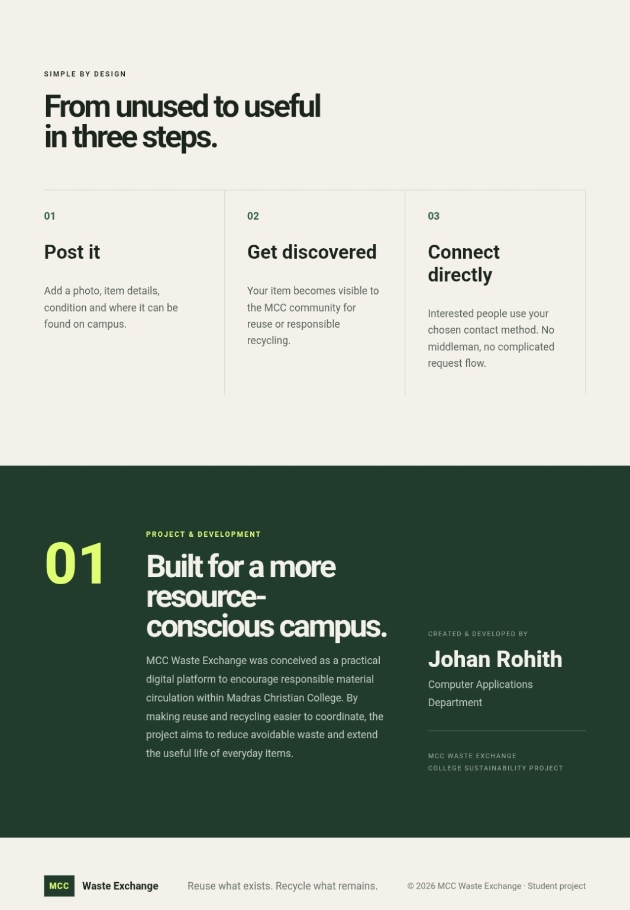

01
MCC Waste Exchange
A campus exchange system built around a simple idea: useful things shouldn't become waste just because their first owner is finished with them.
reusecampuswebdirect exchange
Open repository ↗

